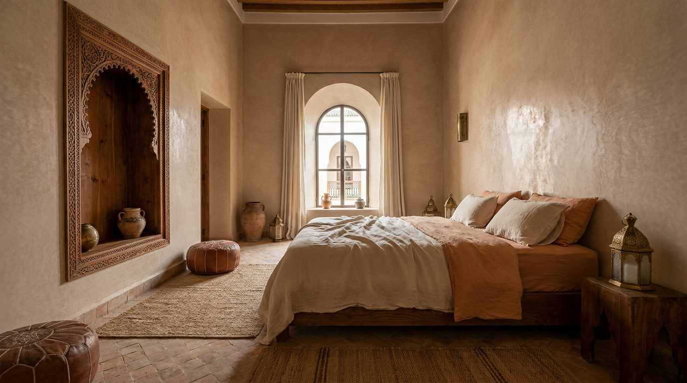

Atlante · INT-MA-01 · Marocco · Africa
Riad nella medina di Marrakech, corte e materia
Esempi · esterno e interno


Perché funziona
In Marocco il compratore di fascia alta conosce l'artigianato meglio di chiunque: non lo impressiona la quantità, lo convince la materia. Un set quiet fatto di calce, cotto, cedro e lino lascia che il prodotto italiano sia letto come oggetto di pari livello, non come souvenir europeo. Il made in Italy qui non è folklore: è la stessa logica di bottega applicata alla proporzione.
Architettura · elementi riproducibili
- corte centrale 5x5 m, sviluppo su due livelli, soffitto delle stanze 3,0-3,6 m
- pareti in tadelakt lucidato a mano, con segni di frattazzo e irregolarità
- pavimento in bejmat 50x150 mm a spina di pesce
- porta in cedro h 2,1 m con pannelli intagliati a mano e chiodi in ferro
- colonnine rivestite in zellige 300x300 mm, h 2,4 m, verde spento
- soffitto in travi di cedro a vista, interasse 500 mm
- nicchia ad arco h 2,2 m, profondita 350 mm
- proporzione chiave: pianta quasi quadrata, tre lati chiusi, un lato aperto sulla corte
Fatto verificato: il Palazzo Bahia a Marrakech è noto per i soffitti in cedro dipinto, lo stucco scolpito e i rivestimenti in zellige, con pavimenti in marmo e zellige.
Fatto verificato: la madrasa Ben Youssef a Marrakech è un esempio documentato di corte con stucco, cedro e zellige.
Valutazione: qui il registro è quiet, la ricchezza sta nella mano dell'artigiano e non nella quantità; un riad loud diventa un set per turisti.
Rischio AI: lo zellige cambia passo e perde la griglia. Meglio una sola parete piastrellata e il resto in tadelakt.
Luce
Prompt di generazione (EN)
Empty riad salon opening onto a courtyard in Marrakech, room 5 x 5 m, ceiling 3.0 m, walls in tadelakt lime plaster with trowel marks and slight irregularity, floor of bejmat terracotta tiles 50 x 150 mm in herringbone, cedar door 2.1 m high with hand-carved panels and iron studs, four columns clad in muted green zellige 300 mm square, cedar beams at 500 mm centres, open patio above at 5.5 m with a partial reed screen. One key light from above left through the open patio, 5600 K, soft graze on the plaster, cool bounce from the tiled floor, side rooms two stops darker. 28 mm lens, camera height 1.2 m, two-point perspective, verticals parallel, no people, no text, no logos, no mirror.